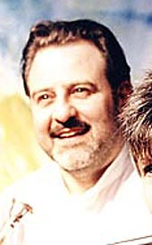

|  |
| Philip Contini |
Biography:Philip ContiniPhilip Contini trained as a chorister under Arthus Oldham and George Farmer, and sang with Scottish Opera and the Edinburgh Festival Chorus. Under the guidance of Margaret Aronson, he has established an Annual Edinburgh Festival concert of his unique interpretation of Neapolitan songs which he sings with 'striking emotional intelligence...passion flows from him...he is a genius...' (The Scotsman). A long time associate of Mike Maran, they worked together on this adaptation of 'Captain Corelli's Mandolin' for the stage. Philip is also Managing Director of Valvona & Crolla. |